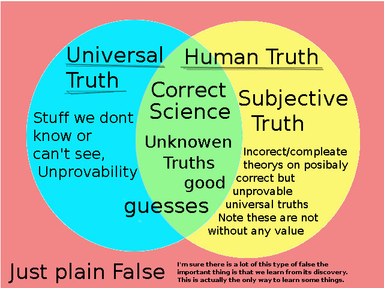

Planning:
Why do we use modal logic?
What is modal logic
modal the mode of a operation of a word
logic tools for resting about the world
modal logic - probably more verbosely modal propositional logic considers the mode of a statement over a variety of
philosophic and scientific terms such as space, time, moral obligation, correctness etc. The Base system concerns necessity []
and possibility <> With propositional logic. There are then a few condensed axioms that can be applied strategically to
reason about arguments.
its basically propositional logic of sentences or statements we consider a statement ie.
the sky is blue. is this true? How do we prove it?
truth is a funny thing its dependant on the scope or aspects you consider and because we
are human we have differing aspects to consider. For the most part we try and find the ground truths. These are
truths that given all available information would still hold.

Some might call the truth: Those conclusions that are evident once all relevant facts are correctly considered.
AN simple example of the search for truth may start by looking up on a sunny day saying yeah the sky is blue. And calling our statement true.
The problem with that is that when the sun goes down its red and fades to black. What is this I though the sky was blue!
The problem is the sky's color is conditional on the time and place so considering that we might say
the sky is blue when it is day time. But what about clouds... And so on we get more specific
until we give up and throw our hands in the are and say well its sometimes blue and sometimes not and
it depends on the weather which we cannot predict. so the sky is possibly blue and possibly not blue ( <>The sky is blue ^ <>~The sky is blue ).
more formal
let p = "the sky is blue."
Observation:
<>p the sky is possibly blue because I have seen it be blue
<>~p the sky is possibly not blue because I have seen the night
We could then make our scope more specific or explore other expressions and implications of what we have observed
if we user the Def<> axiom (<> = ~[]~), or in english possibility is just to be not necessarily false.
We find that
<>~p = ~[]~~p = ~[]p the sky is not necessarily blue because I have seen it be not blue.
<>P = ~[]~p the sky is not necessarily not blue because i have seen it be blue.
condensed english: the sky is possibly but not necessarily blue.
Someone clever might point out. Well the sky is not actually blue it just appears blue when the sun is viewed
through the right amount of atmosphere such that the blue light is scattered by the atmosphere an uniformly makes it into ou eyes
causing us to see the sky a blue. And you would we right. And we have found a divide in how we think about 'the sky'
is it (a) What we see when we look up or (b) the atmosphere. This is why definitions are important in the pursuit of truth.
we can sometimes find that the question is nonsense.
And that is modal logic. The Base system propositional logic plus necessarily = [] and possibly = <>
This is what we call system K or Kerpke semantics
https://en.wikipedia.org/wiki/Glossary_of_mathematical_symbols#%E2%88%A7
We can make some observations about
A note on notation I am a developer so will use a mix of math and programing conventions
I like the simplicity and universality of plain text expression so will do any math in text.
// // indicates a comment
p,q,r // propositions ie the sky is blue
~ // not
p->q // implies / if p then q
^, && // and
v, || // or
{a, b} // sets
<> // possible
[] // necessarily
T // True
F // False
=> // also implies but in the sense of propositional stuff to represents arguments and trains of thought
So what is Modal Logic?
"A modal is an expression (like ‘necessarily’ or ‘possibly’) that is used to qualify the truth of a judgement." ~ Stanford Encyclopedia of PhilosophyI think the important idea is that we are trying to qualify the truth this More generally in english modal is a little more generic.
"Think of modal as relating to some "mode," or form. A modal verb is a helper that gives additional information about the verb that follows it, and includes such words as "can," "will," "should," and "may," among others." ~ Vocabulary.comBut we can see how it the term could relate to Logic
"nounThe topic of provability seems interesting I may do my project on that do some research and explain in a blog post style What that is If I add missing topics to my cheat cheat it may be useful as resource" ~Dictionary.com
- The science that investigates the principles governing correct or reliable inference.
- A particular method of reasoning or argumentation: We were unable to follow his logic.
- The system or principles of reasoning applicable to any branch of knowledge or study.
- Reason or sound judgment, as in utterances or actions: There wasn't much logic in her move.
- Convincing forcefulness; inexorable truth or persuasiveness: the irresistible logic of the facts.
"1. The history of provability logic
Two strands of research have led to the birth of provability logic. The first one stems from a paper by K. Gödel (1933), where he introduces translations from intuitionist propositional logic into modal logic (more precisely, into the system nowadays called S4), and briefly mentions that provability can be viewed as a modal operator. Even earlier, C.I. Lewis started the modern study of modal logic by introducing strict implication as a kind of deducibility, where he may have meant deducibility in a formal system like Principia Mathematica, but this is not clear from his writings. The other strand starts from research in meta-mathematics: what can mathematical theories say about themselves by encoding interesting properties? "
~ Stanford Encyclopedia of Philosophy
A philosophical thought on provability. In our search for answer's we fundamental decided to be objective and therefore need systems like math to quantify the natural world and reason about it. Because of this we are attracted to systems that allows us to systematically assert other things based on our observations.
If we modal the set of propositions uttered by anyone (H) and attempt to map it onto true and false. We run into the problem of Human truth not aligning with Universal truth. This is why we decide to anchor things outside of human speculation and firmly in the grounds of quantified measurements of the world.
There seems to be a meta problem of how do we know our system is universal if it is derived from the murky waters of human truth. So we use the quantification systems of our observations.
A note on simplicity. sometimes we go about this problem searching for the source, the root, or the one unifying theory in the name of elegance of life and so we forget that there is no one way forward. I like to think its more of an expanding graph of knowledge that we are tying to sort through to find answers. The important and life critical questions are the ones that we care so much about being correct that we do not allow ourselves to bet on speculation alone and need ground up proof of what we assert. Ground up is not nessasaraly simple and not nessasaraly unified.
Of the graphs if we take the measured and irrefutable facts and logically map out from their we can begin to define the space of human truth. This is still possibly independent
"Is it really surprising that people ignore logic?" - Kier